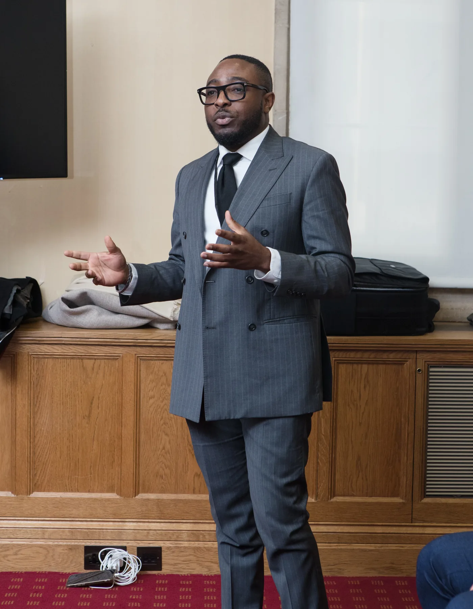
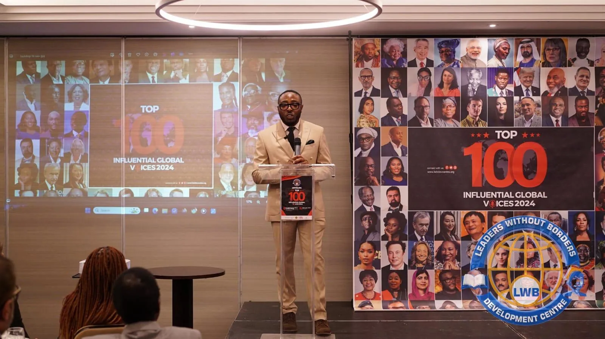
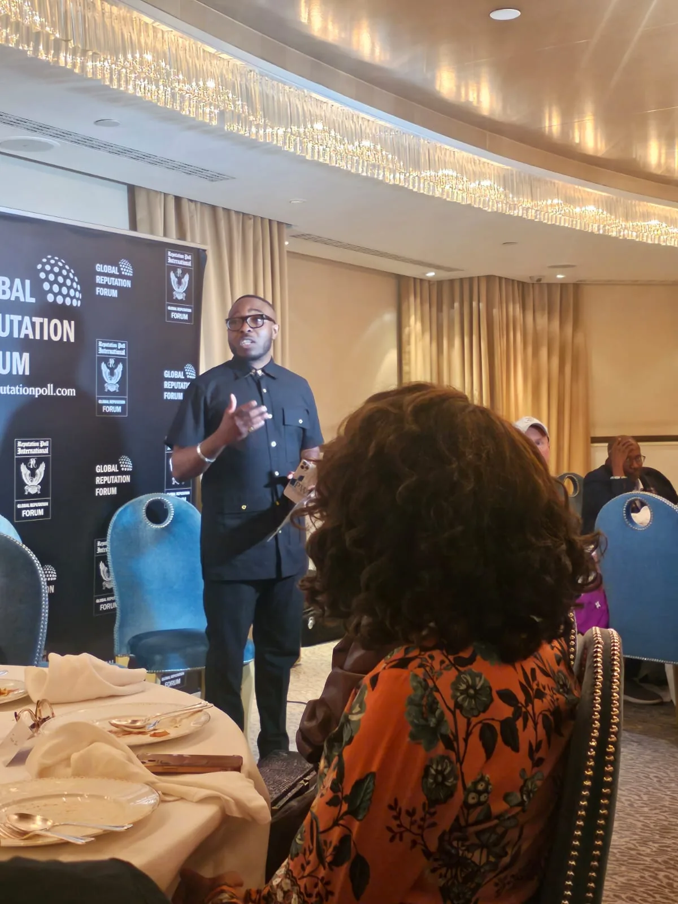
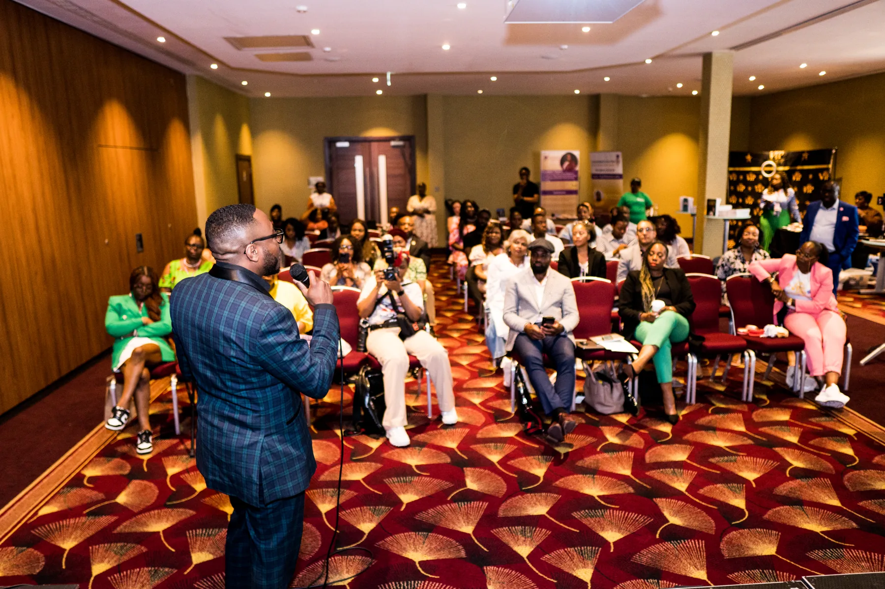

Property as a long-term asset
Why ownership belongs in conversations about long-term plans.
An educational book about property, collaboration and the structures behind shared ownership, written for Nigerians, Africans and the global African diaspora.
Official launch: 14 October 2026 · Abuja, Nigeria
For many people, property feels increasingly out of reach. The familiar advice is to save until you can buy on your own. Fractional Real Estate invites a closer look at another idea: how ownership might be shared through clear rights, responsibilities and governance.
The book opens a practical conversation about understanding an asset, working with others and asking better questions before committing money.
“What can we build? What can we own?”
Get book updates
The book explores the principles behind collaborative property ownership, with education at the center.
Why ownership belongs in conversations about long-term plans.
How pooling resources may change what is possible.
Rights, costs, responsibilities and governance in shared arrangements.
Questions to ask about risk, reporting and possible exits.
For Africans at home and abroad, supporting family is part of life. This book asks how some of those conversations can also include assets, collaboration and future generations.
Dr Daniel Moses’s experience of rebuilding his life in the United Kingdom and learning through business setbacks shaped the thinking behind this book. His work in property led him to focus on assets, careful structures and informed decisions.
Fractional Real Estate is his contribution to a broader conversation about property ownership for Nigerians, Africans and the diaspora.
Scenes from Dr Moses’s property education and community events.



Register to receive information about its release and availability. Registration does not place an order or take payment.